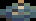
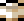

城松本からの脱出
プレイヤーズマニュアル
ストーリー
中世の日本。邪悪な大名が帝室の宝物を盗み、権力を掌握しようと自身の城に隠しました。若き忍者の見習いであるあなたは、城に潜入し、宝物を回収して正当な所有者に返還し、自らの一族に名誉をもたらすことを決意します。しかし、ライバル一族の者も大名の計略を発見し、同じ使命を帯びています。一族の名誉のため、最初に盗まれた品々を回収するためには何でもしなければなりません。
目的

あなたの使命は：
- 城内に隠された5つのアイテムを見つけて収集し、
- 秘密の出口から脱出すること
操作方法
ゲームはキーボードまたはコントローラーでプレイできます。キーボード操作には2つのレイアウトがあり、1台のキーボードで2人対戦する際に使用できます。
シングルプレイヤーまたはネットワークゲームでは、どの操作方法（キーボードAまたはB、任意のゲームパッド）も使用できます。
| キーボードA | キーボードB | ゲームパッド | |
|---|---|---|---|
| 移動 | カーソルキー | WSAD | アナログスティック 十字キー |
| アクション | Enter 右Ctrl |
Space 左Ctrl |
Aボタン トリガー スタート |
| クイック所持品 | I | Q | Xボタン バンパー |
| クイックマップ | M | E | Yボタン |
| メニュー/戻る | Esc Backspace (webのみ) |
Bボタン メニュー |
|
| 一時停止 | P | ||
| フルスクリーン | F11 | ||
| クイックヘルプ | F1 | ||
| オンラインマニュアル | F3 | ||
| メッセージ | T (ネットワークのみ) | ||
プレイヤービュー

各プレイヤーの画面には以下の要素が表示されます：
- 実行可能なデフォルトアクション
-
6スロットの所持品：
- マップ
- 5つの忍術
-
5つのアイテムスロット：
- アイテムを所持中の場合は明るいアイテムアイコン
- アイテムを発見して隠した場合は灰色のアイテムアイコン (*)
- アイテムが同じ部屋にある場合はX印 (*)
- アイテムがある部屋への方向を示す矢印 (*)
- 残り時間（燃える線香）
アクション
城松本からの脱出は4つの方向キーと1つのアクションボタンで操作します。
アクションボタンは画面に表示されるデフォルトアクションを実行します。これは目の前にある対象物によって変化します：扉や家具の前にいる場合は、それらとの可能な相互作用が表示されます。 アイテムや道具を所持している場合は、それに応じた適切なアクションが表示されます。
画面にデフォルトアクションが表示されていない場合、アクションボタンで所持品を開きます。ただし、アイテムを所持中は所持品を使用できません。
| 表示画面 | 左/右 | 上/下 | アクション |
|---|---|---|---|
| 通常移動 | プレイヤー移動 | プレイヤー移動 | デフォルトアクション （アクションが表示されていない場合は所持品を開く） |
| 所持品 | アイテム選択 | 所持品を閉じる | アイテムを使用 |
| マップ | - | 階層変更 | マップを閉じる |
| 錠前 | 施錠/解錠を中止 | 次の暗証番号ピンを設定 | 施錠/解錠 （全てのピン設定後） |
| 戦闘 | パンチ/ブロック （アクション長押し中） |
パンチ/ブロック （アクション長押し中） |
パンチ/ブロック可能状態にする（長押し） |
ゲームの仕組み
ゲームに勝利するには、5つのアイテムを同時に所持し、秘密の出口を見つける必要があります。
移動
- 方向キーでプレイヤーを移動させます。
- 扉を通過するには、近づいてアクションボタンを押して開ける必要があります。開いた扉は閉めることもできます。
- 階段の上り下りは、その上を歩くだけで可能です。
アイテム
- バッグ  を持っていない限り、一度に1つのアイテム  しか持ち運べません。
- アイテムは城内の家具に隠されています。家具に近づいてアクションボタンを押すと探索できます。アイテムが隠されていた場合は、自動的に拾います。
- アイテムを所持中の場合、後で回収するために家具に隠すことができます：家具に近づいてアクションボタンを押すと隠すことができます。1つの家具に複数のアイテムを隠すことができます。
- マップでは、アイテムがある部屋がX印で表示されます。
- ゲーム設定によっては、所持品画面の矢印がアイテムの場所を指し示します。
- プレイヤーが落としたアイテムは床に落ちている状態になります。
忍術
- 発見したアイテムを守り、相手の進行を妨げるために、所持品から忍びの忍術を使用できます。詳しくは忍術の項目を参照してください。
対策道具
- 相手の忍術に対抗するため、城内から役立つ対策道具を見つけることができます。詳しくは忍術の項目を参照してください。
対決
- 使命を遂行する中で避けられない相手との遭遇があり、その際は武術対決が避けられません。詳しくは戦闘の項目を参照してください。
出口
- 5つのアイテムを全て集めたら、城のどこかにある秘密の出口を探してください。破れた壁のパネルのように見えます。
- ゲーム設定によって、出口は最初から見えているか、プレイヤーが全てのアイテムを集めた時点で見えるようになります。
- 全てのアイテムを所持した状態で出口の前に立ったら、通常の扉と同じように開けて通過してください。
時間
- 燃える線香は脱出までの残り時間を表しています。忍術の被害や戦闘での敗北は線香の燃焼を早めます。
マップ

マップには城の構造、プレイヤーの位置、そして所持されていない全てのアイテムの位置が表示されます。ゲーム設定によっては、相手プレイヤーの位置も表示されます。
マップを開くには、空いている場所でアクションボタンを押して所持品を開き、マップを選択するか、クイックマップボタンを使用します。 城には複数の階層があります。上下キーで階層を切り替えることができます。マップの左側には城の垂直断面図が表示されます。
マップには出口の位置は絶対に表示されません。
- X印 - この部屋のどこかにアイテムがあります
- 点滅する四角 - プレイヤー
- はしご - 部屋内の階段（アイコンの向きで上り下りを表示）
- ハイライトされた部屋 - 訪れたことのある部屋
城
ゲームには4つの城と1つの道場があります。
城の基本構造は変わりませんが、アイテム、家具、扉の位置、および全体的な装飾は各ラウンドでランダムに変化します。
練習道場
練習用の小さな道場です。
- 階層数：2
- 部屋数：10
鶴ヶ城
2つの中央階段が特徴的な、細長く高い城です。
実在の鶴ヶ城は福島県会津若松市にあり、徳川幕府の要塞として、また1868年の戊辰戦争での包囲戦で有名です。
- 階層数：5
- 部屋数：17
松本城
2つの天守と多くの階層を持つ大きな城です。
実在の松本城は長野県松本市にあり、日本で最も有名な城の一つで、16世紀から再建されることなく現存しています。
黒い外観から烏城の愛称で知られています。
- 階層数：6
- 部屋数：23
江戸城
展示室が特徴的な、大きく平らな城です。
実在の江戸城は東京の中心部にあり、徳川幕府の本拠地として使用されましたが、1873年の火災で焼失しました。その跡地には、より小規模な皇居が再建されています。
- 階層数：2
- 部屋数：20
安土城
中央が開放的な、比較的小さな城です。
実在の安土城は滋賀県にあり、織田信長に仕えました。16世紀にわずか数年間しか使用されませんでしたが、日本の城郭発展に重要な役割を果たしました。
- 階層数：3
- 部屋数：16
忍術
忍びには相手を妨害するための忍術の術があります。
忍術の中には家具に仕掛けるもの、扉に仕掛けるもの、床に仕掛けるものがあります。
ほとんどの忍術には、それを回避するための対策道具があります。
忍術を仕掛けるには、空いている場所でアクションボタンを押して所持品を開き、使用したい忍術を選択します。
アイテムを所持中は忍術を仕掛けたり対策道具を拾ったりすることはできません。まずアイテムを床に置いてください。
| 忍術 | アイコン | 設置場所 | 対策道具 | アイコン | 入手場所 |
|---|---|---|---|---|---|
| 妖怪 |  |
閉じた扉または家具 | 鏡 |  |
鏡台 |
| 暗証錠 |  |
閉じた扉または家具 | 短刀 |  |
刀掛け |
| 猫 |  |
開いた扉 | 兜 |  |
鎧飾り |
| 煙玉 |  |
床の上 | - | - | |
| 忍び雲 |  |
どこでも | - | - |
妖怪
妖怪は強力な古代の霊で、不用心な忍びを完全に気絶させてしまいます。
閉じた扉や家具に妖怪を封じ込めることができます。
妖怪は鏡で退けることができます。城内の鏡台から鏡を入手できます。
暗証錠
閉じた扉や家具に暗証錠を設置できます。錠を設置する際は、
3つのピンの動きからなる暗証番号を設定する必要があります。各ピンは上か下に動かせます。
錠を解除するには、施錠時と同じ暗証番号が必要です。
暗証番号がわからない場合は、短刀で錠を破壊できます。短刀は
城内の刀掛けから入手できます。
猫
あなたの忠実な猫の仲間は開いた扉を見張り、誰も通さなくなります（あなたも含めて...）
猫は兜で追い払うことができます。兜は城内の鎧飾りから入手できます。
猫は魔法の生き物ですが、一度に一箇所しか見張れません。
煙玉
煙玉は部屋に大量の煙を放出し、誰もその近くに長くいることはできません。煙を回避する方法はなく、迂回するか消えるのを待つしかありません。
忍び雲
窮地に陥った時、忍び雲を使って城内の別の場所に瞬間移動できます。ただし 気をつけてください - 全てのアイテムを失い、また時間も少し失われます！
戦闘
城内でライバルと出会うと、武術対決となります。所持しているアイテムは自動的に落としてしまいます。
- 相手の正面に移動して向き合います。
- アクションボタンを押し続けて武術の構えをとります。
-
アクションボタンを押したまま、方向キーを押して技を繰り出します：
- 相手に向かって - 下段蹴り
- 相手から離れる - 上段防御
- 上 - 上段蹴り
- 下 - 下段防御
- 体力が満タンの忍びに3回技が命中すると、撤退を余儀なくされます。戦闘に勝利しても被弾している場合は、次の戦闘は避けましょう。
戦略
勝利への戦略は自分で見つけ出してください！ただし、以下のヒントを参考にしてください：
- バッグを手に入れるまでは、見つけたアイテムを覚えやすい場所に隠し、忍術で守りましょう。
- 相手の行動に注意を払い、また相手もあなたを監視していることを忘れないでください。
- 戦闘は一貫して勝利するのが難しいため、他に選択肢がない場合のみ行うようにしましょう。
- 相手が大きな優位に立っている場合は、残りのアイテムを探すよりも相手を妨害することに注力しましょう。
- 出口や最後のアイテムを最初に見つけたら... 相手のために"準備"しておきましょう。
スコア
勝者にはスコアとランクが与えられます。スコアに影響する基準は以下の通りです：
- 相手を忍術で妨害：成功1回につき+50点
- マップの使用：初回使用-50点、以降の使用1回につき-5点
- アイテムを最初に発見：+35点
- 相手の仕掛けた忍術を解除：+25点
- 相手の忍術の被害：-25点
- 戦闘での勝利：+20点
- 戦闘での敗北：-20点
ランクは50点ごとに昇格し、最高ランクには200点が必要です。
ルール
ゲーム設定時にいくつかのルールを調整できます。
ルールはプリセットの難易度にまとめられていますが、個別にカスタマイズすることもできます。
| CPUの技量 | 難易度が高いほど、CPUの相手は速く、ミスも少なくなります |
|---|---|
| 出口表示 | 出口が最初から見えるか、あるいはプレイヤーが全てのアイテムを集めた時点（鐘の音が鳴ります）で見えるようになるかを決定します。 |
| 制限時間 |
各プレイヤーに割り当てられる開始時間を設定します：
|
| 方向指示矢印 |
所持品画面の矢印表示を設定します：
|
| 相手プレイヤー表示 | マップ上に相手プレイヤーを表示するかどうかを設定します |
オプション
| Full Screen | フルスクリーンとウィンドウモードを切り替えます |
|---|---|
| TV Filter | レトロ風の画面エフェクトを適用します |
| Camera | 浮遊カメラと固定カメラを切り替えます（3D効果を抑制） |
| Movement | スムーズ（現代風）とアニメーション同期（レトロゲーム風）のプレイヤー移動を切り替えます |
| Highlight | 忍術の設置やアイテムを隠す際の扉と家具の単色ハイライト表示を切り替えます |
| Steam IDs | プライバシー保護のためSteamユーザー名とIDを非表示にします |
| Music | 音楽のオン/オフを切り替えます |
| Volume | ゲーム音量を0から10の範囲で調整します |
| V-Sync | GPUとモニターのリフレッシュレートの同期を切り替えます |
マルチプレイヤー
城松本からの脱出は友達と一緒にプレイすると最高に楽しめます！
同じコンピュータで、またはネットワークを通じて他のプレイヤーと対戦できます。
分割画面
キーボードとゲームパッド/コントローラーを組み合わせて同じコンピュータでプレイ：
- キーボード分割 - 1人がキーボードレイアウトA、もう1人がレイアウトBを使用
- キーボード＋ゲームパッド - 1人が任意のキーボードレイアウト、もう1人がゲームパッドを使用
- 2台のゲームパッド - メニューでプレイヤーにゲームパッドを割り当て
- 2台のキーボード（一部プラットフォームのみ） - メニューでプレイヤーにキーボードを割り当て
Steam P2P
Steamバージョンのゲームでは、Steamのネットワークを使用して、ポート転送やファイアウォールの設定を変更することなく、またIPアドレスや位置情報を公開することなく、フレンドと直接接続できます。
- 1人がホストとなり、もう1人がそのゲームに参加する必要があります
- 参加するには、Steamのフレンドリストから検索するか、IDを直接入力します
- ホストプレイヤーが城とゲームルールを選択できます
- メニューからメッセージ機能を使用（またはTキーを押す）して、対戦中にチャットができます
- 接続時の遅延（"ping"）は右上に表示されます；250未満であれば問題ありません
LAN/WAN
UDP/IPプロトコルを使用して2台のマシン間で直接ネットワーク接続してプレイします。ネットワーク構成によっては、ファイアウォールの許可設定とポート転送が必要になる場合があります。
- 1人がホストとなり、もう1人がそのゲームに参加する必要があります
- 参加するには、相手のホスト名（またはIP）とポートを入力する必要があります
- ホストプレイヤーが城とゲームルールを選択できます
- メニューからメッセージ機能を使用（またはTキーを押す）して、対戦中にチャットができます
- 接続時の遅延（"ping"）は右上に表示されます；250未満であれば問題ありません
情報
城松本からの脱出は、Mausimus（プログラミング）とJoker（アート、音楽）による情熱的なプロジェクトです。
このゲームは誰もが無料で楽しめます。
以下の外部アセットを使用しています：
- 効果音：taira-komori.jpn.org
- タイトルフォント：Eisen Tsunanori
- TVシェーダー：r57shell
プレイしていただきありがとうございます！私たちの他のゲームやプロジェクトはこちらでご覧いただけます：
© 2024 Mausimus. All Rights Reserved.